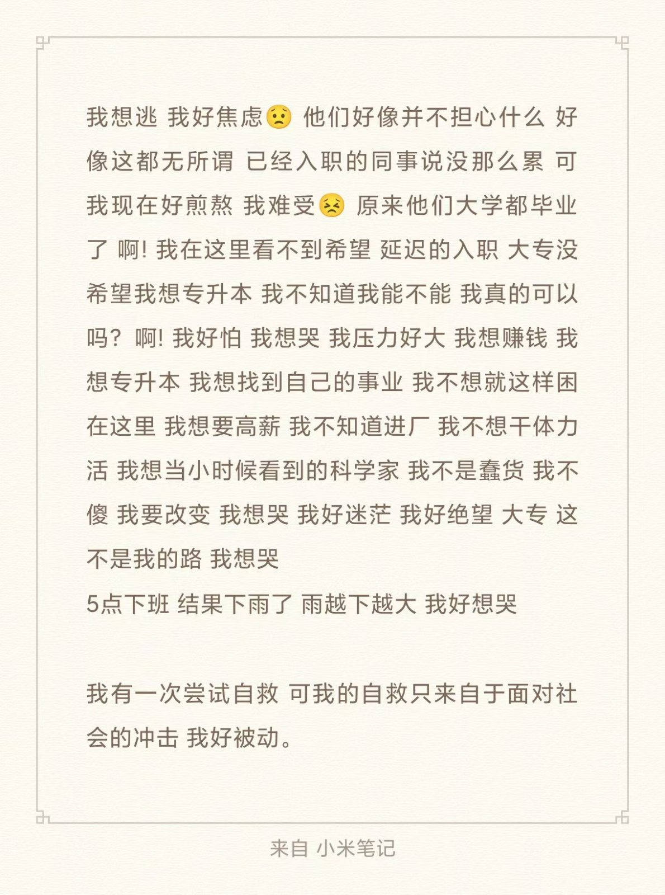

入职了但戒不掉好像更绝望了
2026.9.17/18
九月十七号，上午在宿舍待了一上午，下午睡醒后，去拿了ct报告单。没什么事，戒不掉把结果跟朋友分享了一下，但戒不掉最近好像因为在这里的经历感到低落，他企图从朋友那里得到有效的回应，但毕竟每个人都有自己的生活，可能在他们眼中我并没有那么糟糕，只有我知道┗( T﹏T )┛，就好像看着网上每个人分享着自己的经历，可文字的传递是有限的，我们能体会的只有我们曾体会到的，我们感受的故事体会始终不能百分百与作者一样。 那个自以为重塑了健康的肉身与精神的男孩与少年在面对现实时被轻易击碎。我好像又一次意识到我好像只有自己，或者说那个在男孩少年那里没有被验证的道理，这一次来到了验证时期，我不知道该向谁倾诉，那个男孩在改变时也从来没有向谁倾诉过，他只是在那些emo的音乐中找到了情感的共同点罢了，但那终不是情绪的宣泄口，他的压抑没有得到合理的释放，他转给了少年，少年接过了它，但他好像也承受不住，也许再一次流眼泪，会好受很多。也许 九月十八号（9.18），上午戒不掉去入职了，刚开始很放松，上午也很顺利，下午也并没有什么特别的事，在讲解员讲完安全培训，让我们自己答题，在其中有很多的空闲时间，戒不掉的情绪很失落，他晚上睡得不是很好加上没有午休，他又开始感到绝望，没有现实积极方面的支撑，他顶不住了，身上的部位如潮水一般涌上了大脑与眼眶，戒不掉想哭，他忍住了，这份实习不是戒不掉想要的，戒不掉看不到未来，看不到希望，他写下来随笔在手机上，但他仍然无法提起情绪。五点下了培训，可外面也下起了雨，雨越来越大，我打不着车，我只能加价，我不像花那么多钱，最可笑的是，等我回到了宿舍雨也停的差不多了。 戒不掉也是越来越大胆了，在等车的时候，居然想着哭出来。（情绪失控）

· 完 ·
写于 2026.09.18 20:37